Each image represents the color palette from one episode of Samurai Jack. I took one screen shot per second, then took the 20 most common colors in each screenshot, and aggregated those colors into the images below. Click the Github icon to see the code that generated the images.
The BeginningSeason 1, Episode 1
The Samurai Called JackSeason 1, Episode 2
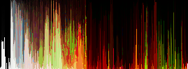
The First FightSeason 1, Episode 3
Jack, the Woolies, and the ChritchellitesSeason 1, Episode 4
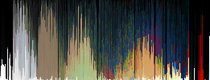
Jack In SpaceSeason 1, Episode 5
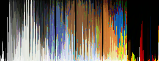
Jack and the Warrior WomanSeason 1, Episode 6
Jack and the Three Blind ArchersSeason 1, Episode 7
Jack versus Mad JackSeason 1, Episode 8
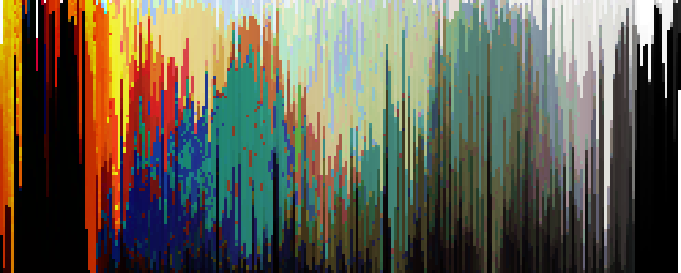
Jack Under the SeaSeason 1, Episode 9
Jack and the Lava MonsterSeason 1, Episode 10
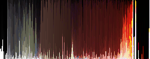
Jack and the ScotsmanSeason 1, Episode 11
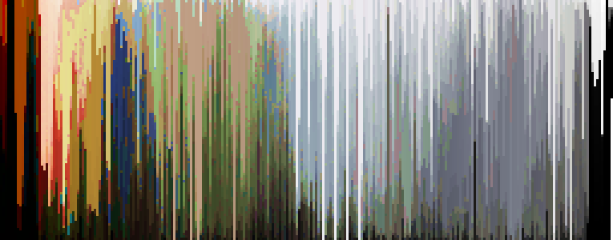
Jack and the GangstersSeason 1, Episode 12
Aku's Fairy TalesSeason 1, Episode 13
Jack Learns To Jump GoodSeason 2, Episode 1
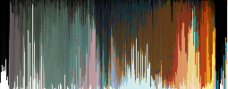
Jack TalesSeason 2, Episode 2
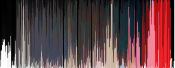
Jack and the SmackbackSeason 2, Episode 3
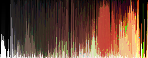
Jack and the Scotsman Part 2Season 2, Episode 4
Jack and the Ultra-robotsSeason 2, Episode 5
Jack Remembers the PastSeason 2, Episode 6
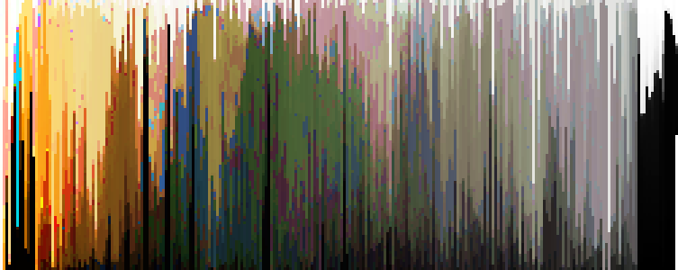
Jack and the MonksSeason 2, Episode 7
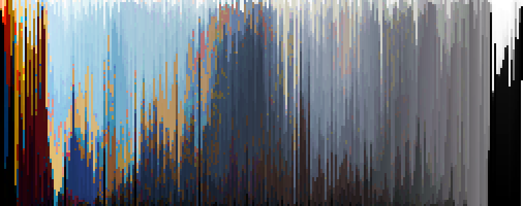
Jack and the Farting DragonSeason 2, Episode 8
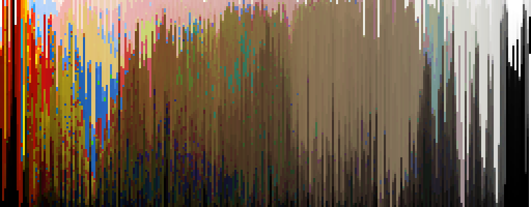
Jack and the HuntersSeason 2, Episode 9
Jack versus Demongo the Soul CollectorSeason 2, Episode 10
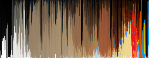
Jack is NakedSeason 2, Episode 11
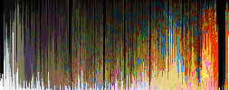
Jack and the SpartansSeason 2, Episode 12
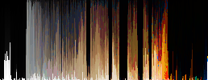
Jack's SandalsSeason 2, Episode 13
Chicken JackSeason 3, Episode 1
Jack and the RaveSeason 3, Episode 2
The Good The Bad and The BeautifulSeason 3, Episode 3
Jack and the ZombiesSeason 3, Episode 4
Jack in EgyptSeason 3, Episode 5
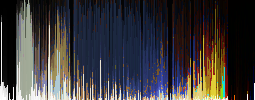
Jack and the Travelling CreaturesSeason 3, Episode 6
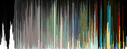
Jack and the CreatureSeason 3, Episode 7
Jack and Swamp MonsterSeason 3, Episode 8
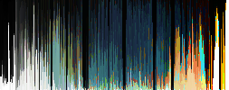
Jack and the Haunted HouseSeason 3, Episode 9
Jack The Monks and the Ancient Master's SonSeason 3, Episode 10
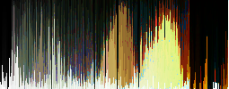
The Birth of Evil Part 1Season 3, Episode 11
The Birth of Evil Part 2Season 3, Episode 12
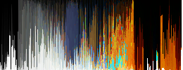
Jack and the LabyrinthSeason 3, Episode 13
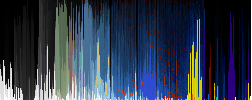
Samurai versus NinjaSeason 4, Episode 1
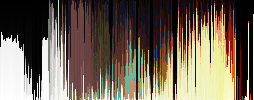
Robo Samurai versus Mondo BotSeason 4, Episode 2
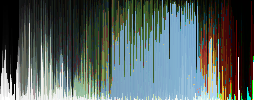
Samurai versus SamuraiSeason 4, Episode 3
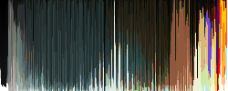
The Aku InfectionSeason 4, Episode 4
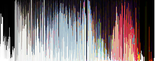
The Princess and the Bounty HuntersSeason 4, Episode 5
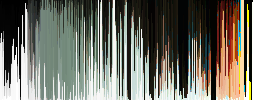
The Scotsman Saves Jack Part 1Season 4, Episode 6
The Scotsman Saves Jack Part 2Season 4, Episode 7
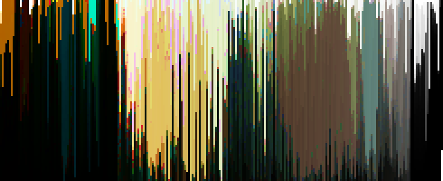
Jack and the Flying Prince and PrincessSeason 4, Episode 8